flowchart LR Types[Types of<br>Measurements] --> Bin[Binary<br><br>Minimum<br>Information] & un[Unordered<br>Categorical<br><br>Low Precision] & ord[Ordered] ord --> ordd["Ordinal<br>Discrete<br><br>↑Well-Populated<br>Categories→<br>↑Information"] & ordc[Ordinal Continuous] ordc --> int[Interval Scaled] & ni[Not Interval<br>Scaled] un & ord --> hist[Histogram] un --> dot[Dot Chart] ord --> ecdf[Empirical Cumulative<br>Distribution Function] ordc --> box[Box Plot<br>Scatterplot] int --> dens[Nonparametric<br>Density Function] ordc --> q[Quantiles, IQR] int --> msd["Mean, SD<br>Gini's mean Δ"]
4 Descriptive Statistics, Distributions, and Graphics
Relationships Between Y and Continuous X
flowchart LR mpy[Mean or Proportion<br>of Y vs. X] --> nps[Nonparametric<br>Smoother] mpy --> ms[Moving<br>General<br>Statistic] oth["Quantiles of Y<br>Gini's mean Δ<br>SD<br>Kaplan-Meier<br>vs. X"] --> ms icx[Inherently<br>Categorical X] --> Tab[Table] mx[Multiple X] --> mod[Model-Based] --> mcharts[Partial<br>Effect Plots<br><br>Effect Differences<br>or Ratios<br><br>Nomograms] mod --> hm[Color Image<br>Plot to Show<br>Interaction<br>Surface]
4.1 Distributions
The distribution of a random variable \(X\) is a profile of its variability and other tendencies. Depending on the type of \(X\), a distribution is characterized by the following.
ABD 1.4
- Binary variable: the probability of “yes” or “present” (for a population) or the proportion of same (for a sample).
- \(k\)-Category categorical (polytomous, multinomial) variable: the probability that a randomly chosen person in the population will be from category \(i, i=1,\ldots,k\). For a sample, use \(k\) proportions or percents.
- Continuous variable: any of the following 4 sets of statistics
- probability density: value of \(x\) is on the \(x\)-axis, and the relative likelihood of observing a value “close” to \(x\) is on the \(y\)-axis. For a sample this yields a histogram.
- cumulative probability distribution: the \(y\)-axis contains the probability of observing \(X\leq x\). This is a function that is always rising or staying flat, never decreasing. For a sample it corresponds to a cumulative histogram1
- all of the quantiles or percentiles of \(X\)
- all of the moments of \(X\) (mean, variance, skewness, kurtosis, …)
- If the distribution is characterized by one of the above four sets of numbers, the other three sets can be derived from this set
- Ordinal Random Variables
- Because there many be heavy ties, quantiles may not be good summary statistics
- The mean may be useful if the spacings have reasonable quantitative meaning
- The mean is especially useful for summarizing ordinal variables that are counts
- When the number of categories is small, simple proportions may be helpful
- With a higher number of categories, exceedance probabilities or the empirical cumulative distribution function are very useful
- Knowing the distribution we can make intelligent guesses about future observations from the same series, although unless the distribution really consists of a single point there is a lot of uncertainty in predicting an individual new patient’s response. It is less difficult to predict the average response of a group of patients once the distribution is known.
- At the least, a distribution tells you what proportion of patients you would expect to see whose measurement falls in a given interval.
1 But this empirical cumulative distribution function can be drawn with no grouping of the data, unlike an ordinary histogram.
4.1.1 Continuous Distributions
Code
x <- seq(-3, 35, length=150)
# spar makes base graphics look better
spar <- function(bot=0, top=0, ...)
par(mar=c(3+bot, 2.75+top, .5, .5), mgp=c(2, .475, 0), ...)
spar(mfrow=c(1,2)); xl <- expression(x)
plot(x, dt(x, 4, 6), type='l', xlab=xl, ylab='')
plot(x, pt(x, 4, 6), type='l', xlab=xl, ylab='')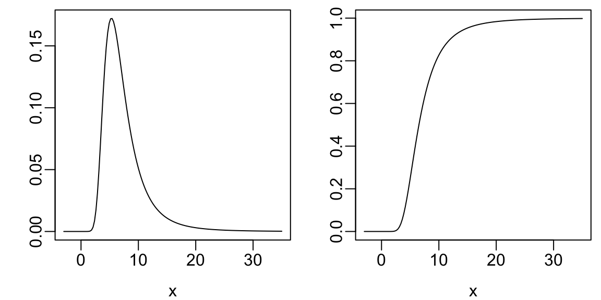
Code
spar()
set.seed(1); x <- rnorm(1000)
hist(x, nclass=40, prob=TRUE, col=gray(.9), xlab=xl, ylab='', main='')
x <- seq(-4, 4, length=150)
lines(x, dnorm(x, 0, 1), col='blue', lwd=2)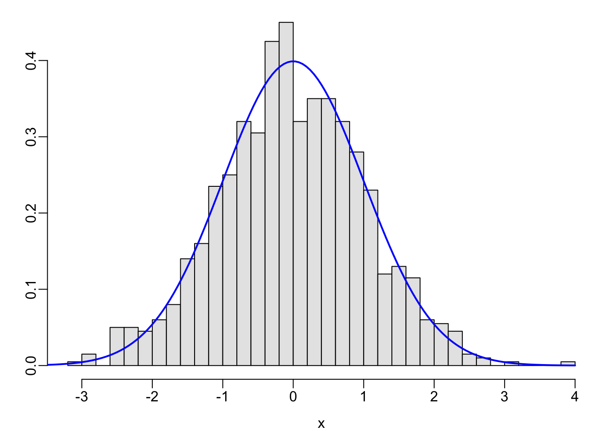
Code
spar()
set.seed(2)
x <- c(rnorm(500, mean=0, sd=1), rnorm(500, mean=6, sd=3))
hist(x, nclass=40, prob=TRUE, col=gray(.9), xlab=xl, ylab='', main='')
lines(density(x), col='blue', lwd=2)
abline(v=c(0, 6), col='red')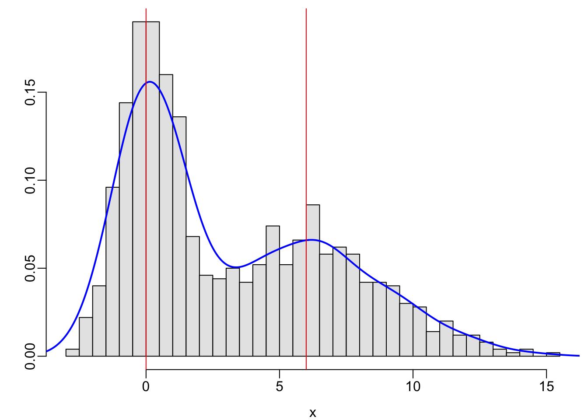
4.1.2 Ordinal Variables
- Continuous ratio-scaled variables are ordinal
- Not all ordinal variables are continuous or ratio-scaled
- Best to analyze ordinal response variables using nonparametric tests or ordinal regression
- Heavy ties may be present
- Often better to treat count data as ordinal rather than to assume a distribution such as Poisson or negative binomial that is designed for counts
- Poisson or negative binomial do not handle extreme clumping at zero
- Example ordinal variables are below
Code
spar()
x <- 0:14
y <- c(.8, .04, .03, .02, rep(.01, 11))
plot(x, y, xlab=xl, ylab='', type='n')
segments(x, 0, x, y)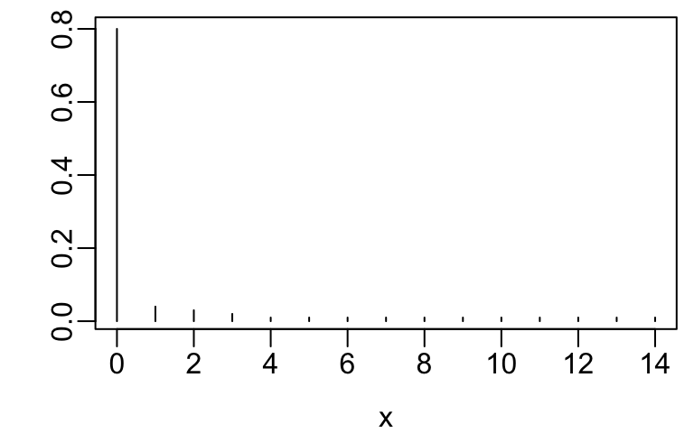
Code
spar()
x <- 1:10
y <- c(.1, .13, .18, .19, 0, 0, .14, .12, .08, .06)
plot(x, y, xlab=xl, ylab='', type='n')
segments(x, 0, x, y)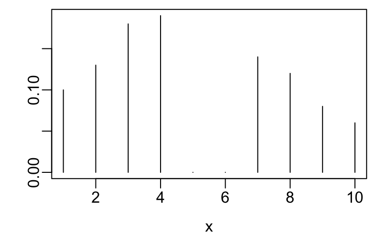
The getHdata function in the Hmisc package Harrell (2020a) finds, downloads, and load()s datasets from hbiostat.org/data.
Code
spar()
require(Hmisc)
getHdata(nhgh) # NHANES dataset Fig. (* @fig-descript-ordc*):
scr <- pmin(nhgh$SCr, 5) # truncate at 5 for illustration
scr[scr == 5 | runif(nrow(nhgh)) < .05] <- 5 # pretend 1/20 dialyzed
hist(scr, nclass=50, xlab='Serum Creatinine', ylab='Density', prob=TRUE, main='')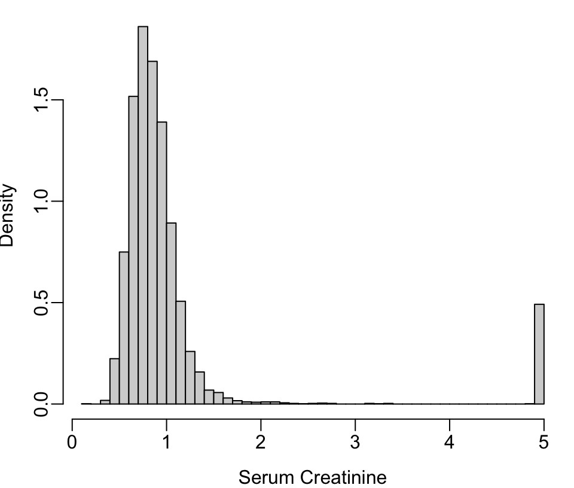
4.2 Descriptive Statistics
ABD 3
4.2.1 Categorical Variables
- Proportions of observations in each category
- For variables representing counts (e.g., number of comorbidities), the mean is a good summary measure (but not the median)
- Modal (most frequent) category
The mean of a binary variable coded 1/0 is the proportion of ones.
4.2.2 Continuous Variables
Denote the sample values as \(x_{1}, x_{2}, \ldots, x_{n}\)
Measures of Location
“Center” of a sample
- Mean: arithmetic average
\(\bar{x} = \frac{1}{n}\sum_{i=1}^{n}x_{i}\)
Population mean \(\mu\) is the long-run average (let \(n \rightarrow \infty\) in computing \(\bar{x}\))- center of mass of the data (balancing point)
- highly influenced by extreme values even if they are highly atypical
- Median: middle sorted value, i.e., value such that \(\frac{1}{2}\) of the values are below it and above it
- always descriptive
- unaffected by extreme values
- not a good measure of central tendency when there are heavy ties in the data
- if there are heavy ties and the distribution is limited or well-behaved, the mean often performs better than the median (e.g., mean number of diseased fingers)
- Geometric mean: hard to interpret and affected by low outliers; better to use median
Quantiles
Quantiles are general statistics that can be used to describe central tendency, spread, symmetry, heavy tailedness, and other quantities.
- Sample median: the 0.5 quantile or \(50^{th}\) percentile
- Quartiles \(Q_{1}, Q_{2}, Q_{3}\): 0.25 0.5 0.75 quantiles or \(25^{th}, 50^{th}, 75^{th}\) percentiles
- Quintiles: by 0.2
- In general the \(p\)th sample quantile \(x_{p}\) is the value such that a fraction \(p\) of the observations fall below that value
- \(p^{th}\) population quantile: value \(x\) such that the probability that \(X \leq x\) is \(p\)
Spread or Variability
- Interquartile range: \(Q_{1}\) to \(Q_{3}\)
Interval containing \(\frac{1}{2}\) of the subjects
Meaningful for any continuous distribution - Other quantile intervals
- Variance (for symmetric distributions): averaged squared difference between a randomly chosen observation and the mean of all observations
\(s^{2} = \frac{1}{n-1} \sum_{i=1}^{n} (x_{i} - \bar{x})^2\)
The \(-1\) is there to increase our estimate to compensate for our estimating the center of mass from the data instead of knowing the population mean.2 - Standard deviation: \(s\) — \(\sqrt{}\) of variance
- \(\sqrt{}\) of average squared difference of an observation from the mean
- can be defined in terms of proportion of sample population within \(\pm\) 1 SD of the mean if the population is normal
- SD and variance are not useful for very asymmetric data, e.g. “the mean hospital cost was $10000 \(\pm\) $15000”
- Gini’s mean difference: mean absolute difference over all possible pairs of observations. This is highly interpretable. robust, and useful for all interval-scaled data, and is even highly precise if the data are normal3.
- range: not recommended because range \(\uparrow\) as \(n\uparrow\) and is dominated by a single outlier
- coefficient of variation: not recommended (depends too much on how close the mean is to zero) Example of Gini’s mean difference for describing patient-to-patient variability of systolic blood pressure: If Gini’s mean difference is 7mmHg, this means that the average disagreement (absolute difference) between any two patients is 7mmHg.
2 \(\bar{x}\) is the value of \(\mu\) such that the sum of squared values about \(\mu\) is a minimum.
3 Gini’s mean difference is labeled Gmd in the output of the R Hmisc describe function, and may be computed separately using the Hmisc GiniMd function
4.3 Graphics
ABD 2,3.4 


Cleveland (1994) and Cleveland (1984) are the best sources of how-to information on making scientific graphs. Much information may be found at hbiostat.org/R/hreport especially these notes: hbiostat.org/doc/graphscourse.pdf. John Rauser has an exceptional video about principles of good graphics. See datamethods.org/t/journal-graphics for graphical methods for journal articles. Also see Saloni Dattani’s [excellenet article on data visualization]{https://www.scientificdiscovery.dev/p/salonis-guide-to-data-visualization).
Murrell (2013) has an excellent summary of recommendations:
- Display data values using position or length.
- Use horizontal lengths in preference to vertical lengths.
- Watch your data–ink ratio.
- Think very carefully before using color to represent data values.
- Do not use areas to represent data values.
- Please do not use angles or slopes to represent data values. Please, please do not use volumes to represent data values.
On the fifth point above, avoid the use of bars when representing a single number. Bar widths contain no information and get in the way of important information. This is addressed below.
R has superior graphics implemented in multiple models, including
- Base graphics such as
plot(), hist(), lines(), points()which give the user maximum control and are best used when not stratifying by additional variables other than the ones being summarized - The
latticepackage which is fast but not quite as good asggplot2when one needs to vary more than one of color, symbol, size, or line type due to having more than one categorizing variable.ggplot2is now largely used in place oflattice. - The
ggplot2package which is very flexible and has the nicest defaults especially for constructing keys (legends/guides) - For semi-interactive graphics inserted into html reports, the
Rplotlypackage, which uses theplotlysystem (which uses the JavascriptD3library) is extremely powerful. See plot.ly/r/getting-started. - Fully interactive graphics can be built using
RShinybut this requires a server to be running while the graph is viewed.
For ggplot2, www.cookbook-r.com/Graphs contains a nice cookbook. See also learnr.wordpress.com. To get excellent documentation with examples for any ggplot2 function, google ggplot2 _functionname_. ggplot2 graphs can be converted into plotly graphics using the ggplotly function. But you will have more control using R plotly directly.
The older non-interactive graphics models which are useful for producing printed and pdf output are starting to be superseded with interactive graphics. One of the biggest advantages of the latter is the ability to present the most important graphic information front-and-center but to allow the user to easily hover the mouse over areas in the graphic to see tabular details.
4.3.1 Graphing Change vs. Raw Data
A common mistake in scientific graphics is to cover up subject variability by normalizing repeated measures for baseline (see Section Section 3.7). Among other problems, this prevents the reader from seeing regression to the mean for subjects starting out at very low or very high values, and from seeing variation in intervention effect as a function of baseline values. It is highly recommended that all the raw data be shown, including those from time zero. When the sample size is not huge, spaghetti plots are most effective for graphing longitudinal data because all points from the same subject over time are connected. An example Davis (2002) pp. 161-163 is below.
Code
require(Hmisc) # also loads ggplot2
getHdata(cdystonia)
ggplot(cdystonia, aes(x=week, y=twstrs, color=factor(id))) +
geom_line() + xlab('Week') + ylab('TWSTRS-total score') +
facet_grid(treat ~ site) +
guides(color=FALSE)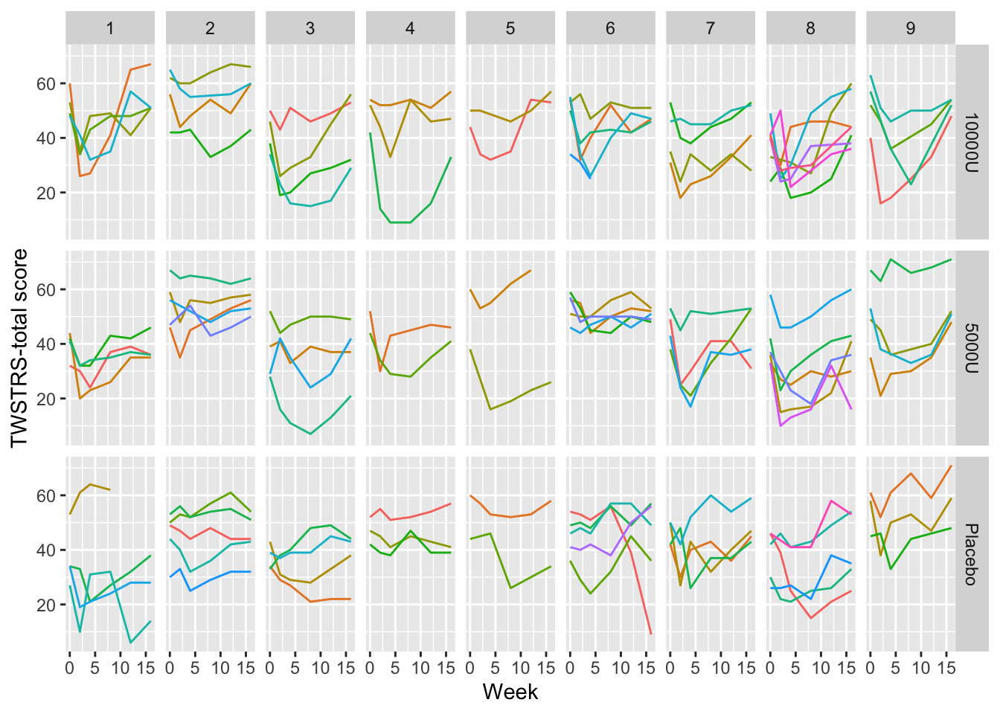
Graphing the raw data is usually essential.
4.3.2 Categorical Variables
- pie chart
- high ink:information ratio
- optical illusions (perceived area or angle depends on orientation vs. horizon)
- hard to label categories when many in number
- bar chart
- high ink:information ratio
- hard to depict confidence intervals (one sided error bars?)
- hard to interpret if use subcategories
- labels hard to read if bars are vertical
- dot chart
- leads to accurate perception
- easy to show all labels; no caption needed
- allows for multiple levels of categorization (see Figure 4.8 and Figure 4.9)
- multi-panel display for multiple major categorizations
- lines of dots arranged vertically within panel
- categories within a single line of dots
- easy to show 2-sided error bars
Code
getHdata(titanic3)
d <- upData(titanic3,
agec = cut2(age, c(10, 15, 20, 30)), print=FALSE)
d <- with(d, as.data.frame(table(sex, pclass, agec)))
d <- subset(d, Freq > 0)
ggplot(d, aes(x=Freq, y=agec)) + geom_point() +
facet_grid(sex ~ pclass) +
xlab('Frequency') + ylab('Age')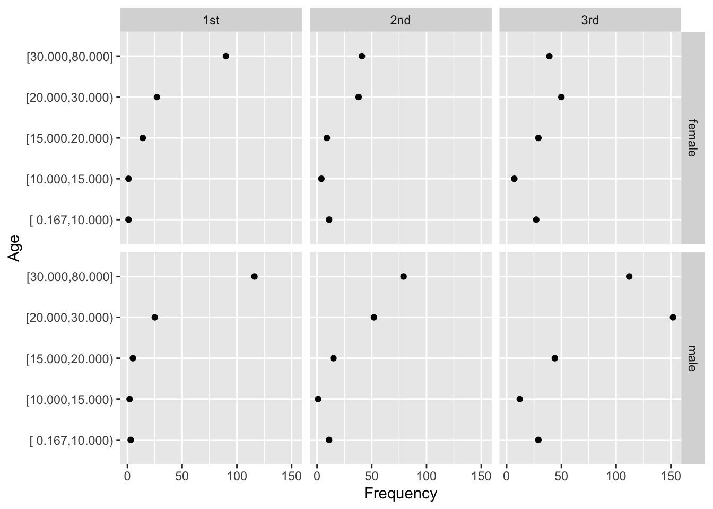
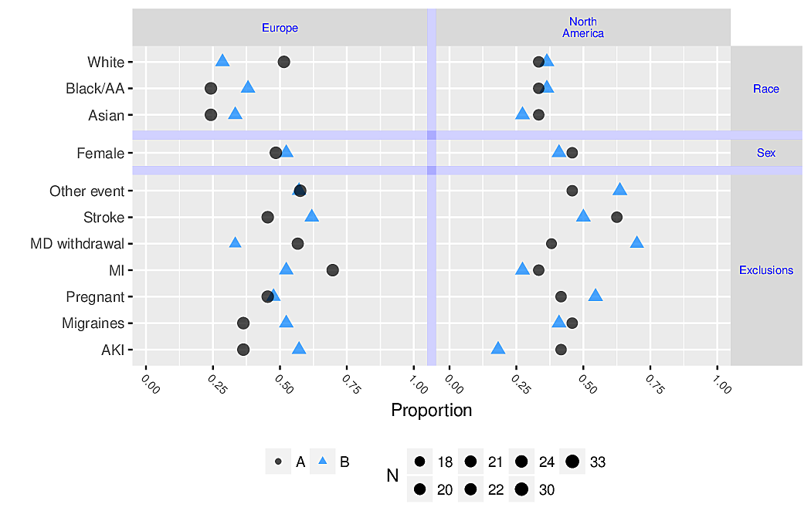
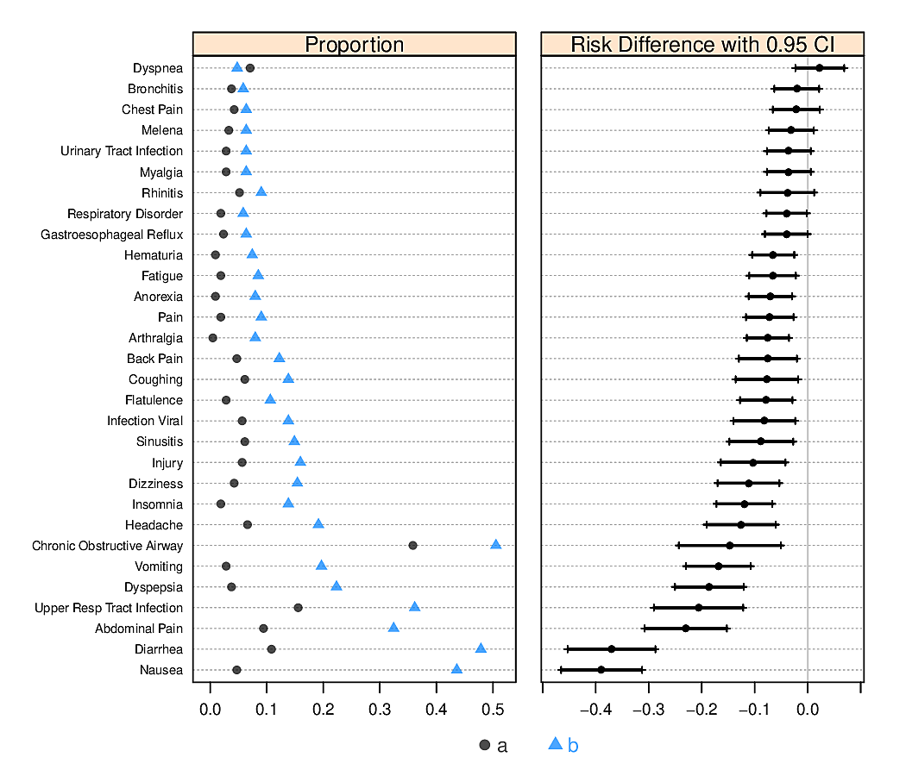
R greport package. See test.Rnw here
- Avoid chartjunk such as dummy dimensions in bar charts, rotated pie charts, use of solid areas when a line suffices
4.3.3 Continuous Variables
Raw Data
For graphing two continuous variable, scatterplots are often essential. The following example draws a scatterplot on a very large number of observations in a measurement comparison study where the goal is to measure esophageal pH longitudinally and across subjects.
Code
getHdata(esopH)
contents(esopH)Data frame:esopH
136127 observations and 2 variables, maximum # NAs:0| Name | Labels | Class | Storage |
|---|---|---|---|
| orophar | Esophageal pH by Oropharyngeal Device | numeric | double |
| conv | Esophageal pH by Conventional Device | numeric | double |
Code
xl <- label(esopH$conv)
yl <- label(esopH$orophar)
ggplot(esopH, aes(x=conv, y=orophar)) + geom_point(pch='.') +
xlab(xl) + ylab(yl) +
geom_abline(intercept = 0, slope = 1)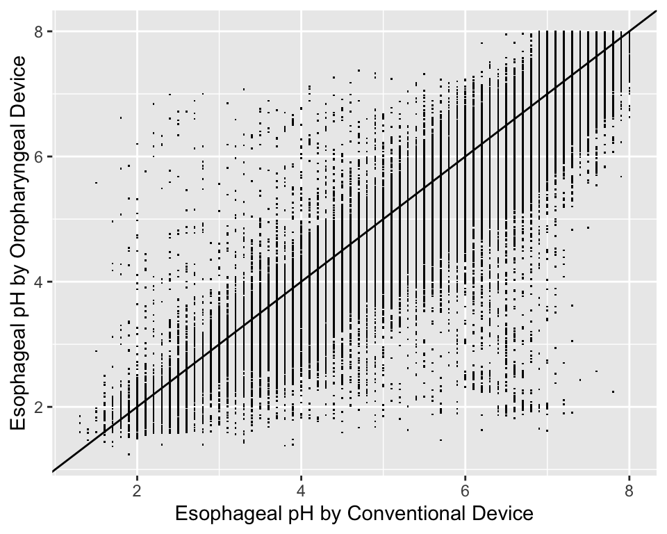
With large sample sizes there are many collisions of data points and hexagonal binning is an effective substitute for the raw data scatterplot. The number of points represented by one hexagonal symbol is stratified into 15 groups of approximately equal numbers of points.
Code
ggplot(esopH, aes(x=conv, y=orophar)) +
stat_binhex(aes(fill=Hmisc::cut2(..count.., g=15)),
bins=40) +
xlab(xl) + ylab(yl) +
guides(fill=guide_legend(title='Frequency'))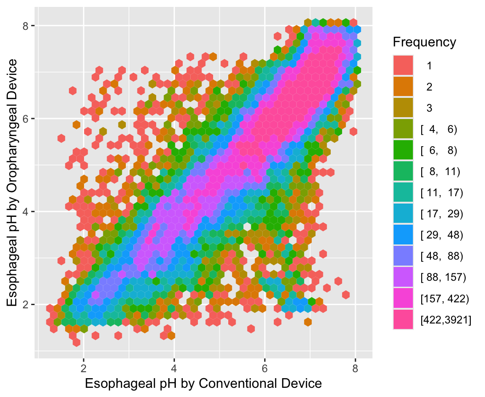
Use the Hmisc ggfreqScatter function to bin the points and represent frequencies of overlapping points with color and transparency levels.
Code
with(esopH, ggfreqScatter(conv, orophar, bins=50, g=20) +
geom_abline(intercept=0, slope=1))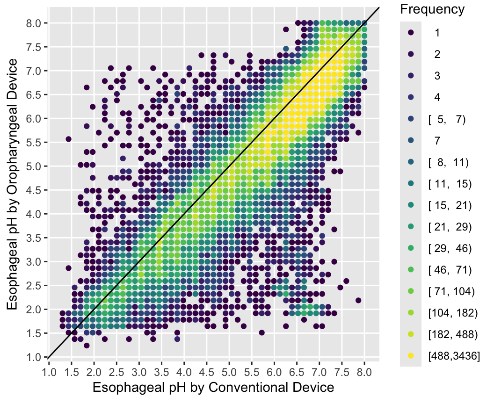
Distributions
ABD 1.4
- histogram showing relative frequencies
- requires arbitrary binning of data
- not optimal for comparing multiple distributions
- cumulative distribution function: proportion of values \(\leq x\) vs. \(x\) (Figure 4.15)
Can read all quantiles directly off graph.
Code
getHdata(pbc)
pbcr <- subset(pbc, drug != 'not randomized')
spar(bot=1)
Ecdf(pbcr[,c('bili','albumin','protime','sgot')],
group=pbcr$drug, col=1:2,
label.curves=list(keys='lines'))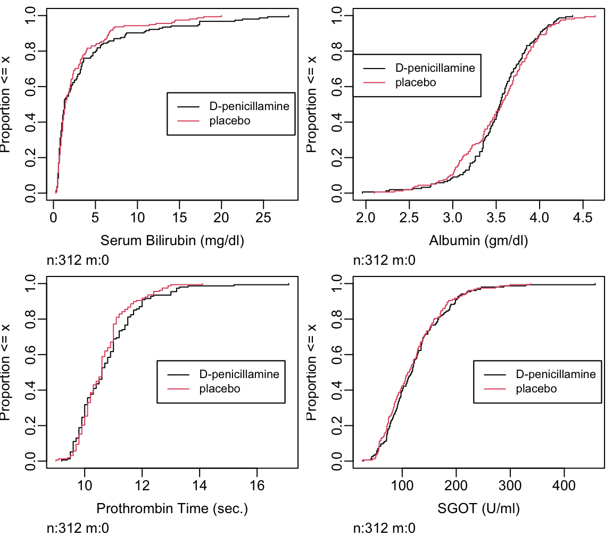
- Box plots shows quartiles plus the mean. They are a good way to compare many groups as shown below.
Note that this approach is very ineffective in handling continuous baseline variables
Code
require(lattice)
getHdata(diabetes)
wst <- cut2(diabetes$waist, g=2)
levels(wst) <- paste('Waist', levels(wst))
bwplot(cut2(age,g=4) ~ glyhb | wst*gender, data=diabetes,
panel=panel.bpplot, xlab='Glycosylated Hemoglobin', ylab='Age Quartile')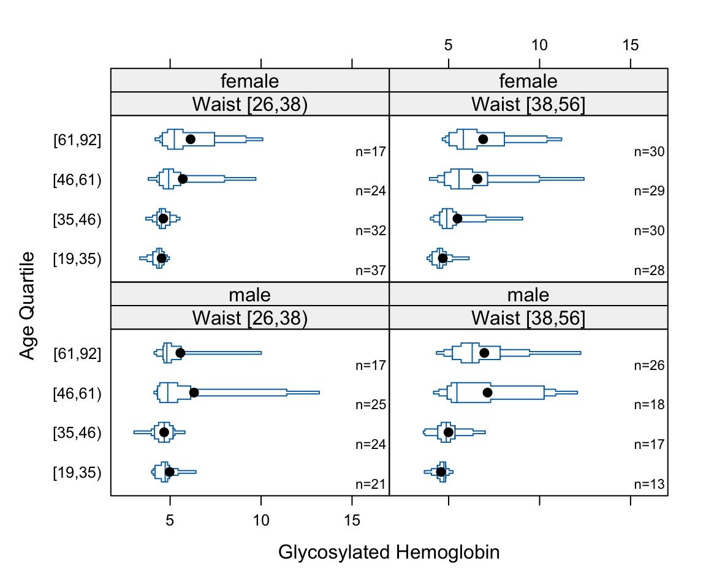
Regular box plots have a high ink:information ratio. Using extended box plots we can show more quantiles. The following schematic shows how to interpret them.
Code
bpplt()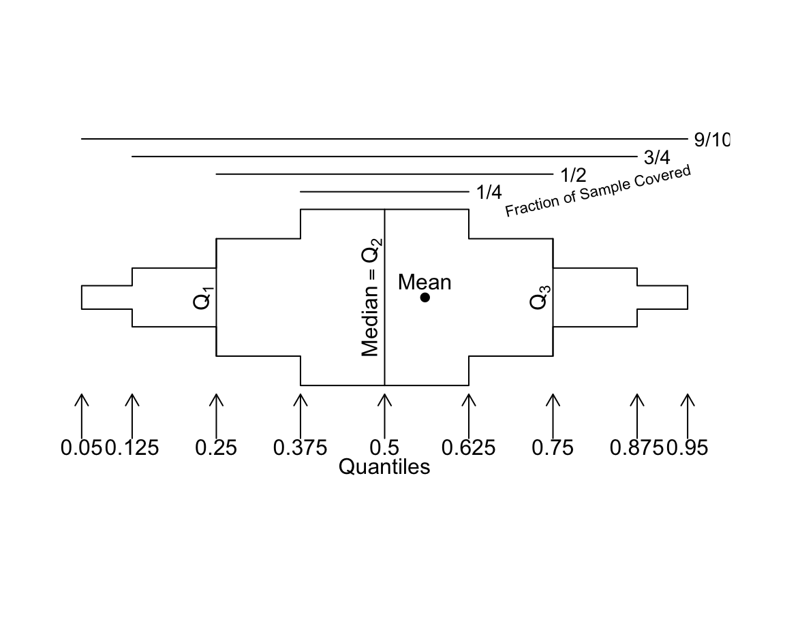
Here are extended box plots stratified by a single factor.
Code
getHdata(support)
s <- summaryM(crea ~ dzgroup, data=support)
# Note: if the variables on the left side of the formula contained a mixture of
# categorical and continuous variables there would have been two parts to to
# results of plot(s), one named Continuous and one named Categorical
plot(s)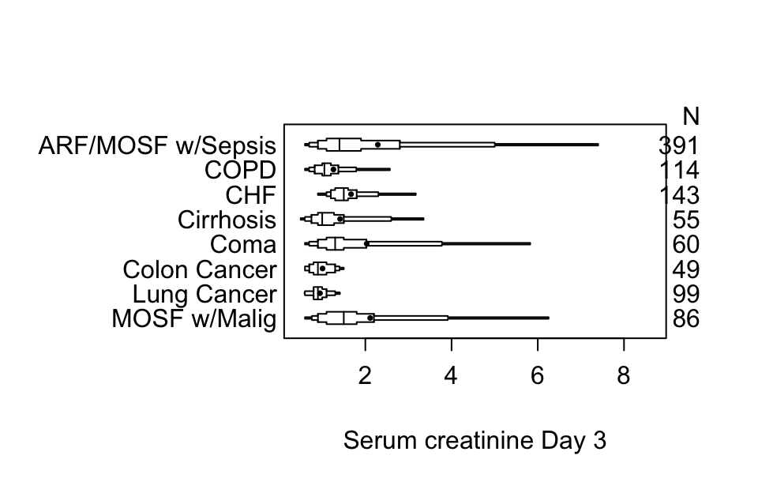
Using plotly graphics we can make an interactive extended box plot whose elements are self-explanatory; hover the mouse over graphical elements to see their definitions and data values.
Code
options(grType='plotly') # set to use interactive graphics output for
# certain Hmisc and rms package functions
plot(s) # default is grType='base'Code
options(grType='base')Box plots (extended or not) are inadequate for displaying bimodality. Violin plots show the entire distribution well if the variable being summarized is fairly continuous.
Even better are spike histograms, when not also showing longitudinal trends.
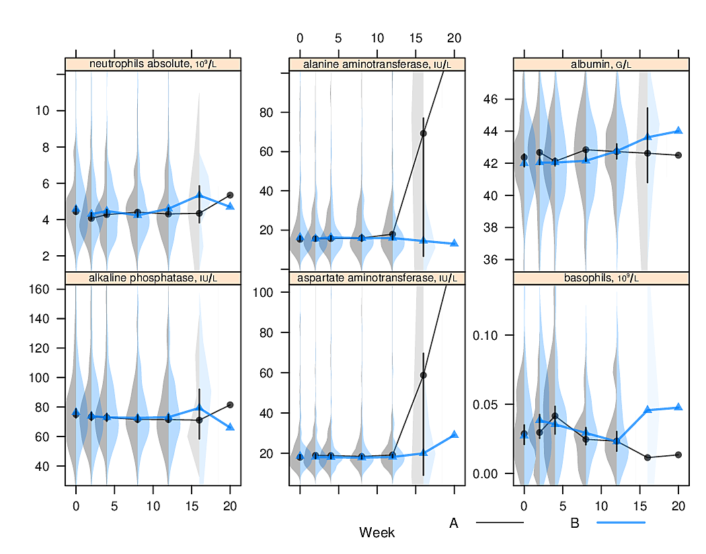
R greport package.
Relationships
- When response variable is continuous and descriptor (stratification) variables are categorical, multi-panel dot charts, box plots, multiple cumulative distributions, etc., are useful.
- Categorization of continuous independent variable X is highly problematic and misleading
- Two continuous variables: scatterplot
- Trends when X is continuous
- nonparametric smoother such as loess for trends in means or proportions
- more general: moving statistics (generalizations of moving averages)
- can estimate quantiles, mean, variability of Y vs. X
- can also allow for censoring, e.g., moving 1y and 2y cumulative incidence using the Kaplan-Meier estimator
- general
RfunctionmovStats
- Moving statistics method
- does not categorize X into non-overlapping intervals
- creates small intervals of X, compute the statistic of interest on Y
- move to the next interval, overlapping significantly with the last window
- link the Y statistic computed in the X window to the mean X within the interval
- after getting Y statistics for all overlapping X intervals, smooth these X-Y pairs using the “super-smoother” or loess
- windows are formed based on interval sample sizes, not based on absolute coordinates; allows for highly skewed X-distributions (window sizes vary, in X units)
- Example: moving 2-year cumulative incidence of disease
- first interval is from the lowest X to the 25th lowest X
- compute Y statistic for those observations: one minus the Kaplan-Meier estimate of 2y event-free probability
- attach to mean X in the 25 lowest Xs
- move up 5 observations, forming a new interval from the 6th lowest X to the 30th lowest X
- as we get away from the outer part of the X distribution the windows will be \(\pm 15\) observations on either side of the target X for which the Y property is being estimated
- …
- when finished apply a large amount of smoothing to the X-Y pairs
As an example let’s estimate the upper quartile of glycohemoglobin (HbA\(_{\mathrm{1c}}\)) and the variability in HbA\(_{\mathrm{1c}}\), both as a function of age. Our measure of variability will be Gini’s mean difference. Use an NHANES dataset. The raw age distribution is shown in the first panel. Instead of using the default window sample size of \(\pm 15\) observations use 30.
Code
getRs('movStats.r') # Load function from Github
require(data.table)
getHdata(nhgh)
setDT(nhgh)
d <- nhgh[, .(age, gh)]
stats <- function(y)
list('Moving Q3' = quantile(y, 3/4),
'Moving Gmd' = GiniMd(y),
N = length(y))
u <- movStats(gh ~ age, stat=stats, msmooth='both',
eps=30, # +/- 30 observation window
melt=TRUE, data=d, pr='margin')| N | Mean | Min | Max | xinc |
|---|---|---|---|---|
| 6795 | 60.8 | 40 | 61 | 33 |
Code
g <- ggplot(u, aes(x=age, y=gh)) + geom_line(aes(color=Type)) +
facet_wrap(~ Statistic, scale='free_y') +
xlim(10, 80) + xlab('Age') + ylab(expression(HbA["1c"]))
g <- addggLayers(g, d, value='age', facet=list(Statistic='Gmd'))
addggLayers(g, d, value='age', type='spike', pos='top',
facet=list(Statistic='Gmd'))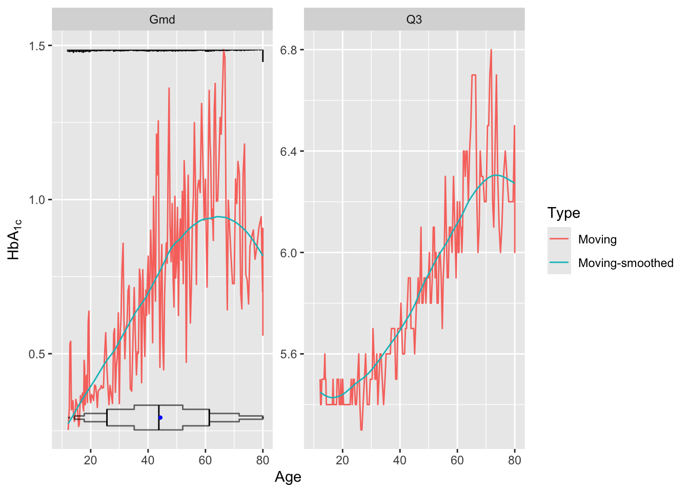
Younger subjects tend to differ from each other in HbA\(_{\mathrm{1c}}\) by 0.5 on the average while typical older subjects differ by almost 1.0. Note the large spike in the histogram at age 80. NHANES truncated ages at 80 as a supposed safeguard against subject re-identification.
Re-draw the last graph but just for the smoothed estimates for \(Q_3\), and include a spike histogram.
Code
u <- u[Type == 'Moving-smoothed' & Statistic == 'Q3',]
g <- ggplot(u, aes(x=age, y=gh)) + geom_line() +
xlab('Age') + ylab(expression(paste(HbA["1c"]~~~Q[3]))) + ylim(5.4, 6.4)
addggLayers(g, d, value='age', type='spike', pos='bottom')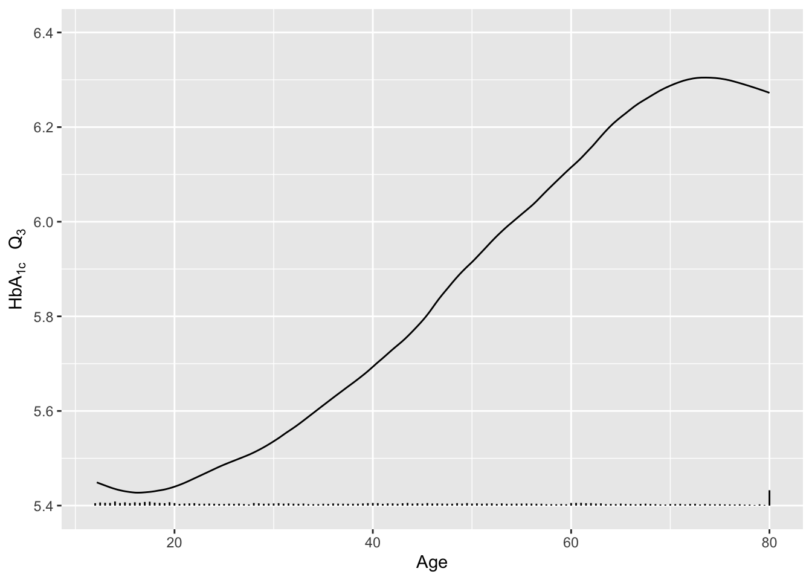
4.3.4 Graphs for Summarizing Results of Studies
- Dot charts with optional error bars (for confidence limits) can display any summary statistic (proportion, mean, median, mean difference, etc.)
- It is not well known that the confidence interval for a difference in two means cannot be derived from individual confidence limits.4
Show individual confidence limits as well as actual CLs for the difference.
4 In addition, it is not necessary for two confidence intervals to be separated for the difference in means to be significantly different from zero.
Code
attach(diabetes)
set.seed(1)
male <- smean.cl.boot(glyhb[gender=='male'], reps=TRUE)
female <- smean.cl.boot(glyhb[gender=='female'], reps=TRUE)
dif <- c(mean=male['Mean']-female['Mean'],
quantile(attr(male, 'reps')-attr(female,'reps'), c(.025,.975)))
plot(0,0,xlab='Glycated Hemoglobin',ylab='',
xlim=c(5,6.5),ylim=c(0,4), axes=F)
axis(1, at=seq(5, 6.5, by=0.25))
axis(2, at=c(1,2,3.5), labels=c('Female','Male','Difference'),
las=1, adj=1, lwd=0)
points(c(male[1],female[1]), 2:1)
segments(female[2], 1, female[3], 1)
segments(male[2], 2, male[3], 2)
offset <- mean(c(male[1],female[1])) - dif[1]
points(dif[1] + offset, 3.5)
segments(dif[2]+offset, 3.5, dif[3]+offset, 3.5)
at <- c(-.5,-.25,0,.25,.5,.75,1)
axis(3, at=at+offset, label=format(at))
segments(offset, 3, offset, 4.25, col=gray(.85))
abline(h=c(2 + 3.5)/2, col=gray(.85))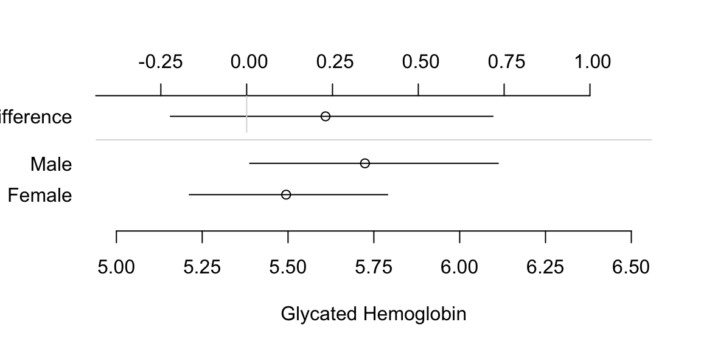
- For showing relationship between two continuous variables, a trend line or regression model fit, with confidence bands
Bar Plots with Error Bars
- “Dynamite” Plots
- Height of bar indicates mean, lines represent standard error
- High ink:information ratio
- Hide the raw data, assume symmetric confidence intervals
- Replace with
- Dot plot (smaller sample sizes)
- Box plot (larger sample size)
Code
getHdata(FEV); set.seed(13)
FEV <- subset(FEV, runif(nrow(FEV)) < 1/8) # 1/8 sample
require(ggplot2)
s <- with(FEV, summarize(fev, llist(sex, smoke), smean.cl.normal))
ggplot(s, aes(x=smoke, y=fev, fill=sex)) +
geom_bar(position=position_dodge(), stat="identity") +
geom_errorbar(aes(ymin=Lower, ymax=Upper),
width=.1,
position=position_dodge(.9))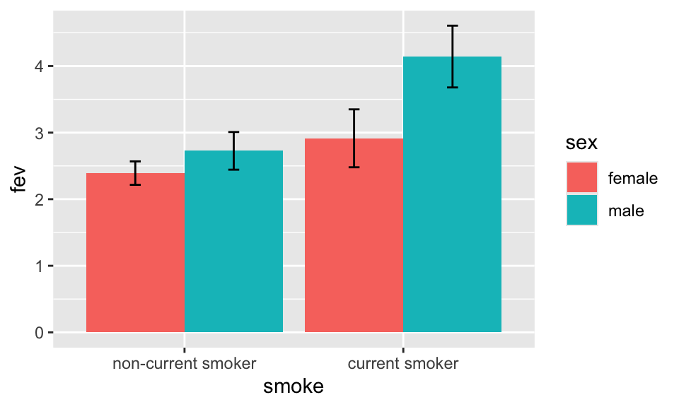
See biostat.app.vumc.org/DynamitePlots for a list of the many problems caused by dynamite plots, plus some solutions.
Instead of the limited information shown in the bar chart, show the raw data along with box plots. Modify default box plots to replace whiskers with the interval between 0.1 and 0.9 quantiles.
Code
require(ggplot2)
stats <- function(x) {
z <- quantile(x, probs=c(.1, .25, .5, .75, .9))
names(z) <- c('ymin', 'lower', 'middle', 'upper', 'ymax')
if(length(x) < 10) z[c(1,5)] <- NA
z
}
ggplot(FEV, aes(x=sex, y=fev)) +
stat_summary(fun.data=stats, geom='boxplot', aes(width=.75), shape=5,
position='dodge', col='lightblue') +
geom_dotplot(binaxis='y', stackdir='center', position='dodge', alpha=.4) +
stat_summary(fun.y=mean, geom='point', shape=5, size=4, color='blue') +
facet_grid(~ smoke) +
xlab('') + ylab(expression(FEV[1])) + coord_flip()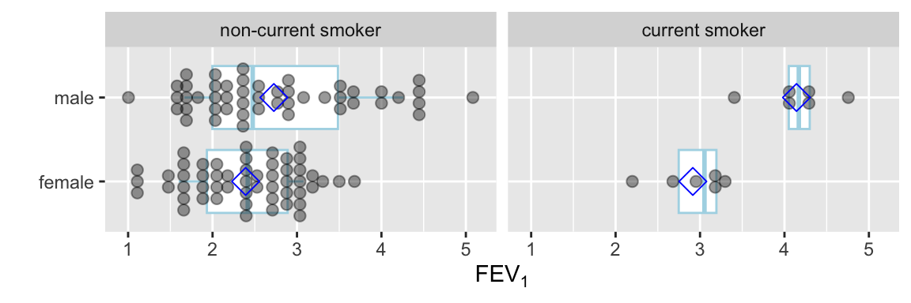
Use a violin plot to show the distribution density estimate (and its mirror image) instead of a box plot.
Code
ggplot(FEV, aes(x=sex, y=fev)) +
geom_violin(width=.6, col='lightblue') +
geom_dotplot(binaxis='y', stackdir='center', position='dodge', alpha=.4) +
stat_summary(fun.y=median, geom='point', color='blue', shape='+', size=12) +
facet_grid(~ smoke) +
xlab('') + ylab(expression(FEV[1])) + coord_flip()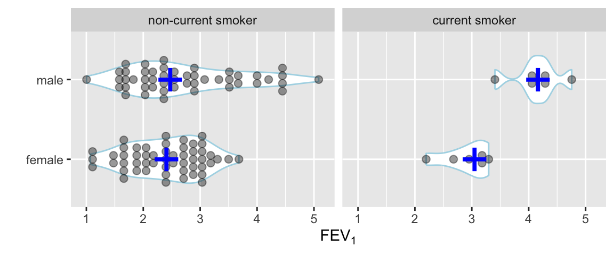
Semi-Interactive Graphics Examples
These examples are all found in hbiostat.org/talks/rmedicine19.html.
- R for Clinical Trial Reporting
- Spike histograms with hovertext for overall statistical summary (slide 11)
- Dot plots (slide 12)
- Extended box plots (slide 13)
- Spike histograms with quantiles, mean, dispersion (slide 15)
- Survival plots with CI for difference, continuous number at risk (slide 16)
- Example clinical trial reports (slide 35)
Other examples: descriptions of BBR course participants: hbiostat.org/bbr/registrants.html.
4.3.5 Graphs for Describing Statistical Model Fits
Several types of graphics are useful. All but the first are implemented in the R rms package Harrell (2020b).
- Single-axis nomograms: Used to transform values (akin to using a slide rule to compute square roots) or to get predicted values when the model contains a single predictor
- Partial effect plots: Show the effect on \(Y\) of varying one predictor at a time, holding the other predictors to medians or modes, and include confidence bands. This is the best approach for showing shapes of effects of continuous predictors.
- Effect charts: Show the difference in means, odds ratio, hazard ratio, fold change, etc., varying each predictor and holding others to medians or modes5. For continuous variables that do not operate linearly, this kind of display is not very satisfactory because of its strong dependence on the settings over which the predictor is set. By default inter-quartile-range effects are used.
- Nomograms: Shows the entire model if the number of interactions is limited. Nomograms show strengths and shapes of relationships, are very effective for continuous predictors, and allow computation of predicted values (although without confidence limits).
5 It does not matter what the other variables are set to if they do not interact with the variable being varied.
For an example of a single-axis nomogram, consider a binary logistic model of a single continuous predictor variable X from which we obtain the predicted probability of the event of interest.
The intercept \(\alpha\) and slope \(\beta\) were computed to match a published model. These would ordinarily be computed from
coef(f) where f is the fit object.Code
par(mar=c(3,.5,1,.5))
beta <- (qlogis(.999)-qlogis(.001))/177
alpha <- qlogis(.001)-23*beta
plot.new()
par(usr=c(-10,230, -.04, 1.04))
par(mgp=c(1.5,.5,0))
axis(1, at=seq(0,220,by=20))
axis(1, at=seq(0,220,by=5), tcl=-.25, labels=FALSE)
title(xlab='X')
p <- c(.001,.01,.05,seq(.1,.9,by=.1),.95,.99,.999)
s <- (qlogis(p)-alpha) / beta
axis(1, at=s, label=as.character(p), col.ticks=gray(.7),
tcl=.5, mgp=c(-3,-1.7,0))
p <- c(seq(.01,.2,by=.01), seq(.8,99,by=.01))
s <- (qlogis(p)-alpha) / beta
axis(1, at=s, labels=FALSE, col.ticks=gray(.7), tcl=.25)
title(xlab='Estimated Risk', mgp=c(-3,-1.7,0))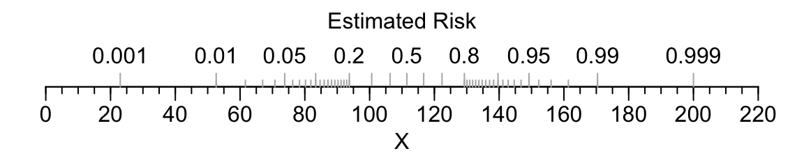
Here are examples of graphical presentations of a fitted multivariable model using NHANES data to predict glycohemoglobin from age, sex, race/ethnicity, and BMI.. Restricted cubic spline functions with 4 default knots are used to allow age and BMI to act smoothly but nonlinearly. Partial effects plots are in Figure 4.28
Ordinary regression is not an adequate fit for glycohemoglobin; an excellent fit comes from ordinal regression. BMI is not an adequate summary of body size. An ordinary regression model in the \(-1.75\) power of glycohemoglobin resulted in approximately normal residuals and is used for illustration. The transformation is subtracted from a constant just so that positive regression coefficients indicate that increasing a predictor increases glycohemoglobin. The inverse transformation raises predicted values to the \(\frac{-1}{1.75}\) power after accounting for the subtraction, and is used to estimate the median glycohemoglobin on the original scale. If residuals have a normal distribution after transforming the dependent variable, the estimated mean and median transformed values are the same. Inverse transforming the estimates provides an estimate of the median on the original scale (but not the mean).
Code
require(rms)
getHdata(nhgh) # NHANES data
dd <- datadist(nhgh); options(datadist='dd')
g <- function(x) 0.09 - x ^ - (1 / 1.75)
ginverse <- function(y) (0.09 - y) ^ -1.75
f <- ols(g(gh) ~ rcs(age, 4) + re + sex + rcs(bmi, 4), data=nhgh)
cat('<br><small>\n')Code
fLinear Regression Model
ols(formula = g(gh) ~ rcs(age, 4) + re + sex + rcs(bmi, 4), data = nhgh)
| Model Likelihood Ratio Test |
Discrimination Indexes |
|
|---|---|---|
| Obs6795 | LR χ21861.16 | R20.240 |
| σ0.0235 | d.f.11 | R2adj0.238 |
| d.f.6783 | P(>χ2)0.0000 | g0.015 |
Residuals
Min 1Q Median 3Q Max -0.097361 -0.012083 -0.002201 0.008237 0.168892
| β | S.E. | t | P(>|t|) | |
|---|---|---|---|---|
| Intercept | -0.2884 | 0.0048 | -60.45 | <0.0001 |
| age | 0.0002 | 0.0001 | 3.34 | 0.0008 |
| age' | 0.0010 | 0.0001 | 7.63 | <0.0001 |
| age'' | -0.0040 | 0.0005 | -8.33 | <0.0001 |
| re=Other Hispanic | -0.0013 | 0.0011 | -1.20 | 0.2318 |
| re=Non-Hispanic White | -0.0082 | 0.0008 | -10.55 | <0.0001 |
| re=Non-Hispanic Black | -0.0013 | 0.0009 | -1.34 | 0.1797 |
| re=Other Race Including Multi-Racial | 0.0006 | 0.0014 | 0.47 | 0.6411 |
| sex=female | -0.0022 | 0.0006 | -3.90 | <0.0001 |
| bmi | -0.0006 | 0.0002 | -2.54 | 0.0111 |
| bmi' | 0.0059 | 0.0009 | 6.44 | <0.0001 |
| bmi'' | -0.0161 | 0.0025 | -6.40 | <0.0001 |
Code
print(anova(f), dec.ss=3, dec.ms=3)Analysis of Variance for g(gh)
| d.f. | Partial SS | MS | F | P | |
|---|---|---|---|---|---|
| age | 3 | 0.732 | 0.244 | 441.36 | <0.0001 |
| Nonlinear | 2 | 0.040 | 0.020 | 35.83 | <0.0001 |
| re | 4 | 0.096 | 0.024 | 43.22 | <0.0001 |
| sex | 1 | 0.008 | 0.008 | 15.17 | <0.0001 |
| bmi | 3 | 0.184 | 0.061 | 110.79 | <0.0001 |
| Nonlinear | 2 | 0.023 | 0.011 | 20.75 | <0.0001 |
| TOTAL NONLINEAR | 4 | 0.068 | 0.017 | 30.94 | <0.0001 |
| REGRESSION | 11 | 1.181 | 0.107 | 194.29 | <0.0001 |
| ERROR | 6783 | 3.749 | 0.001 |
Code
cat('</small>\n')Code
# Show partial effects of all variables in the model, on the original scale
ggplot(Predict(f, fun=ginverse),
ylab=expression(paste('Predicted Median ', HbA['1c'])))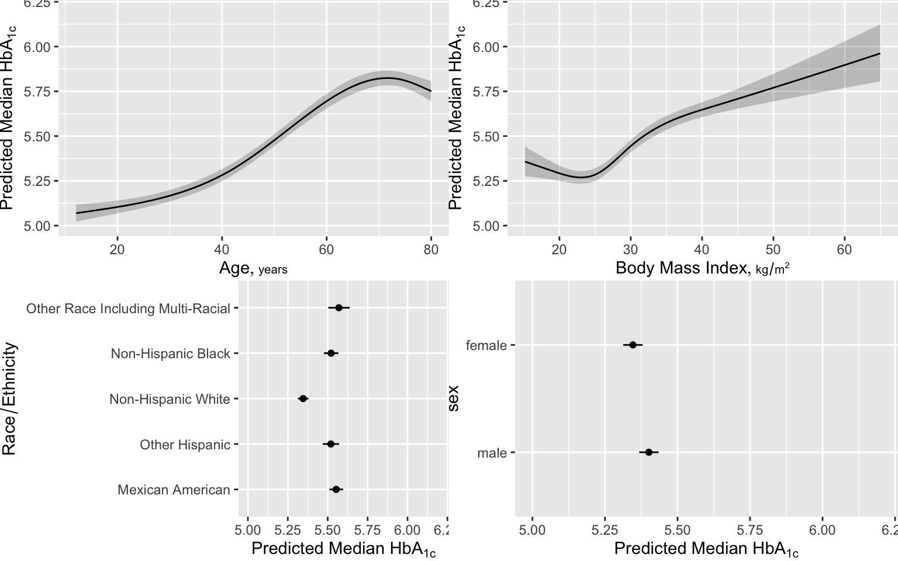
An effect chart is in Figure 4.29 and a nomogram is in Figure 4.30. See stats.stackexchange.com/questions/155430/clarifications-regarding-reading-a-nomogram for excellent examples showing how to read such nomograms.
Code
plot(summary(f))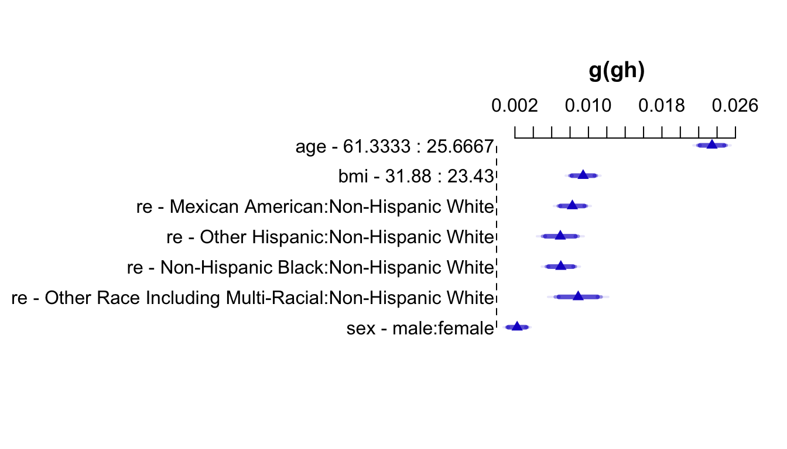
Code
plot(nomogram(f, fun=ginverse, funlabel='Median HbA1c'))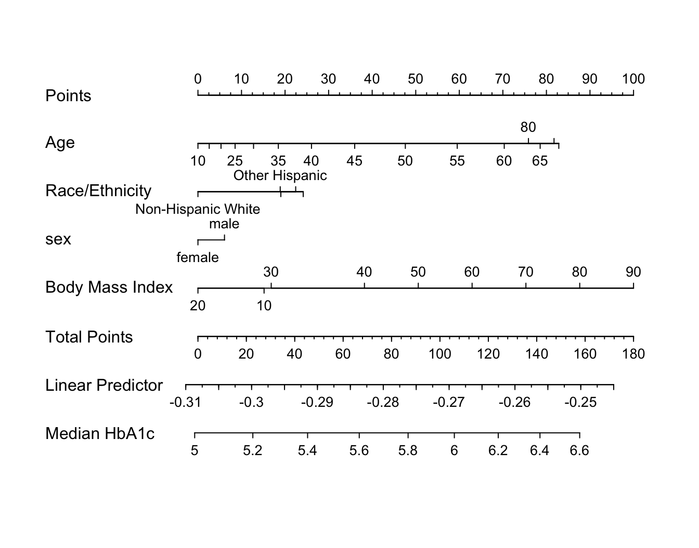
Points scale to convert each predictor value to a common scale. Add the points and read this number on the Total Points scale, then read down to the median.
Graphing Effect of Two Continuous Variables on \(Y\)
The following examples show the estimated combined effects of two continuous predictors on outcome. The two models included interaction terms, the second example using penalized maximum likelihood estimation with a tensor spline in diastolic \(\times\) systolic blood pressure.
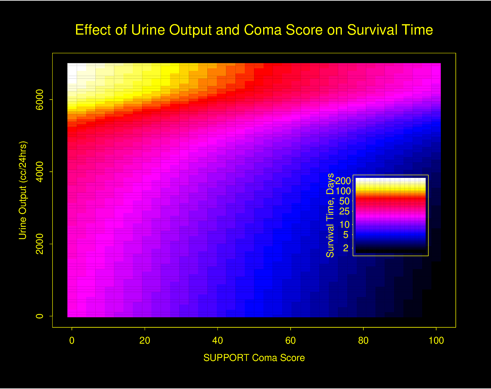
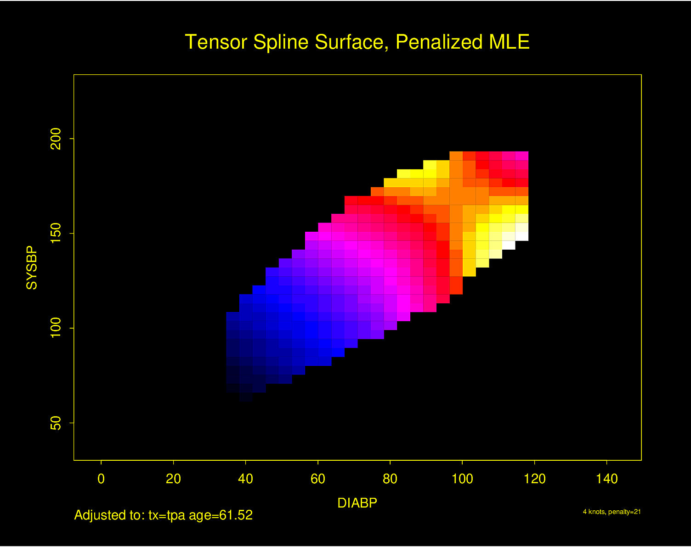
Figure 4.32 is particularly interesting because the literature had suggested (based on approximately 24 strokes) that pulse pressure was the main cause of hemorrhagic stroke whereas this flexible modeling approach (based on approximately 230 strokes) suggests that mean arterial blood pressure (roughly a \(45^\circ\) line) is what is most important over a broad range of blood pressures. At the far right one can see that pulse pressure (axis perpendicular to \(45^\circ\) line) may have an impact although a non-monotonic one.
4.4 Tables


What are tables for?
- Lookup of details
- Not for seeing trends
- For displaying a summary of a variable stratified by a truly categorical variable
- Not for summarizing how a variable changes across levels of a continuous independent variable
Since tables are for lookup, they can be complex. With modern media, a better way to think of a table is as a pop-up when viewing elements of a graph.
What to display in a table for different types of response variables:
- Binary variables: Show proportions first; they should be featured because they are normalized for sample size
- Don’t need to show both proportions (e.g., only show proportion of females)
- Proportions are better than percents because of reduced confusion when speaking of percent difference (is it relative or absolute?) and because percentages such as 0.3% are often mistaken for 30% or 3%.
- Make logical choices for independent and dependent variables.
E.g., less useful to show proportion of males for patients who lived vs. those who died than to show proportion of deaths stratified by sex. - Continuous response variables
- to summarize distributions of raw data: 3 quartiles
recommended format: 35 50 67 or 35/50/67 - summary statistics: mean or median and confidence limits (without assuming normality of data if possible)
- to summarize distributions of raw data: 3 quartiles
- Continuous independent (baseline) variables
- Don’t use tables because these requires arbitrary binning (categorization)
- Use graphs to show smooth relationships
- Show number of missing values
- Add denominators when feasible
- Confidence intervals: in a comparative study, show confidence intervals for differences, not confidence intervals for individual group summaries
Code
getHdata(stressEcho)
d <- stressEcho
require(data.table)
setDT(d)
d[, hxofMI := factor(hxofMI, 0 : 1, c('No history of MI', 'History of MI'))]
s <- summaryM(bhr + basebp + basedp + pkhr + maxhr + gender~ hxofMI, data=d)
print(s, exclude1=TRUE, npct='both', digits=3, middle.bold=TRUE)| Descriptive Statistics (N=558). | ||
| No history of MI N=404 |
History of MI N=154 |
|
|---|---|---|
Basal heart rate
bpm
|
65 74 85 | 63 72 84 |
Basal blood pressure
mmHg
|
120 134 150 | 120 130 150 |
Basal Double Product bhr*basebp
bpm*mmHg
|
8514 9874 11766 | 8026 9548 11297 |
Peak heart rate
mmHg
|
107 123 136 | 104 120 132 |
Maximum heart rate
bpm
|
107 122 134 | 102 118 130 |
| gender : female | 0.68 273⁄404 | 0.42 65⁄154 |
| a b c represent the lower quartile a, the median b, and the upper quartile c for continuous variables. | ||
See also hbiostat.org/talks/rmedicine19.html#18.